Every mockup is one self-contained HTML file: inline CSS and JavaScript, system fonts, no network. Serve this directory and open the index: python3 -m http.server 8768 --bind 127.0.0.1 from app/design, then http://127.0.0.1:8768/. Each mockup has controls for its states and a NOTES.md beside it with the decisions. The code is the source of truth once a design ships; the mockup is what the implementer builds from and the snapshots compare against. The thumbnails are shots/; node app/design/shots.mjs recaptures them with Chrome after a mockup changes.
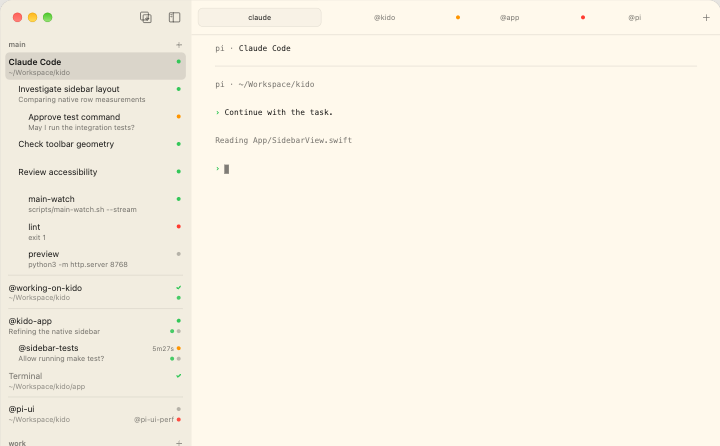
Sidebarshipped, in step with the code Sessions, windows, panes; children in place and folded clusters; dividers and the active-window fill; tabs, host label, the breadcrumb pill.
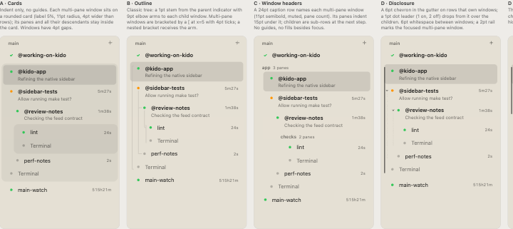
The hierarchy and grouping treatments that were compared before the current sidebar: brackets, guides, cards, stacks, miniatures.
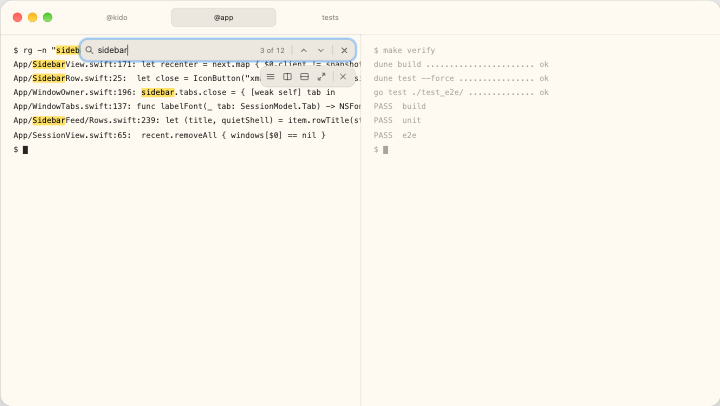
The hover toolbar and the find capsule over a pane, with the COPY and history pills and the capsule family's edge and shadow.
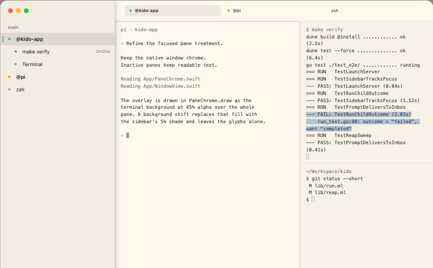
The treatments compared for a multi-pane window; shipped: the 3% paper shift plus the 1pt accent edge with the concentric corner.
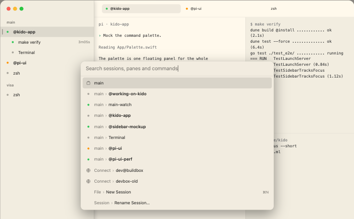
⌘P: the root list, Connect, Rename Session, Theme and Prompt modes; their keys and errors.
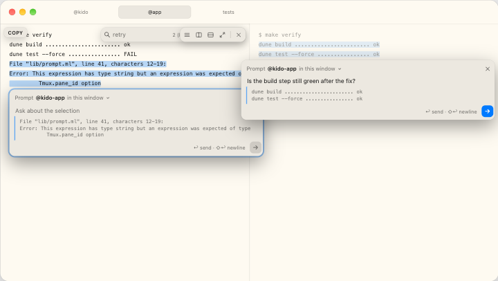
Selection and the context menu are shipped; the floating prompt boxes gave way to the palette's Prompt mode and stay as a record.
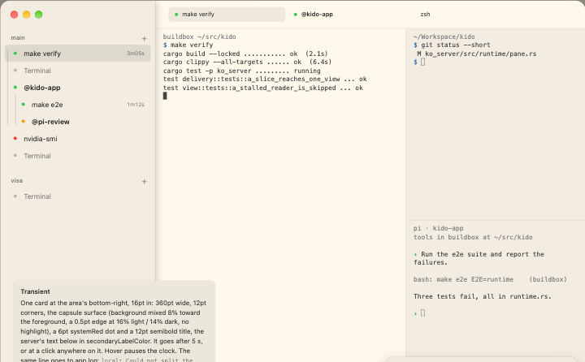
The transient error card over the pane area, the persistent config notice with Open config, and the connection banner.
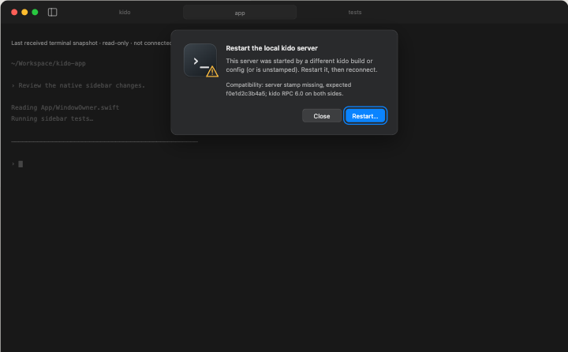
The NSAlert sheets for a server stamp or RPC mismatch, local and remote, with their copy and buttons.
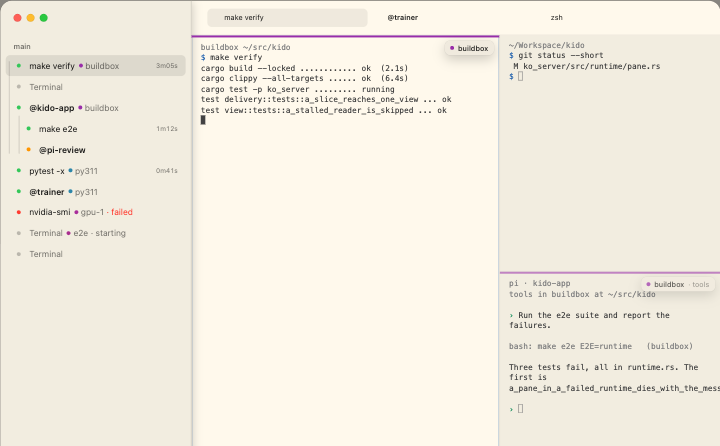
The 3pt stripe and the pill on a runtime pane, the sidebar suffix, the palette's runtime rows, and ko_tui's suffix-only treatment.
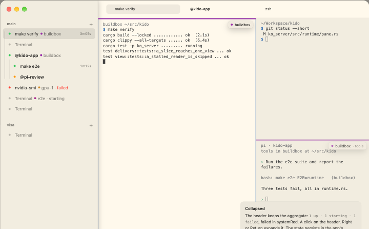
The collapsible Runtimes section at the bottom of the sidebar: configured and ad-hoc runtimes, their state, start and stop.
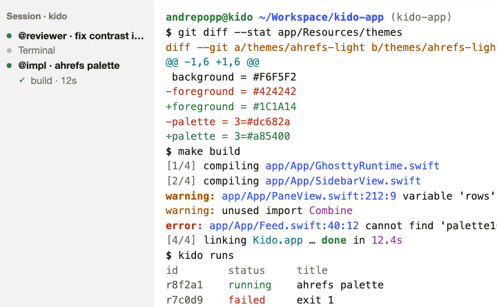
The bundled ahrefs-light and ahrefs-dark terminal themes side by side, with the source colours and their roles.
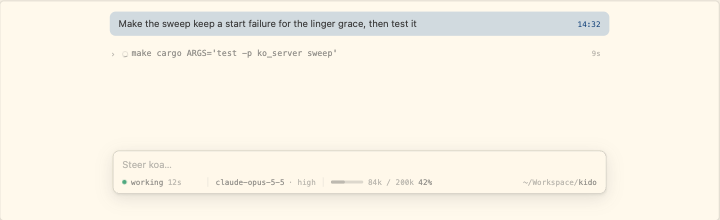
The whole page: streaming Markdown, runs, dialogs, the queue, pickers, pi's exit; wide and 60 cells.
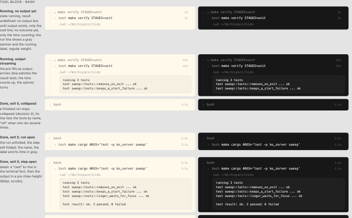
Every state of a tool or thinking block side by side: running, done, failed, aborted, truncated, nested, each tool kind.
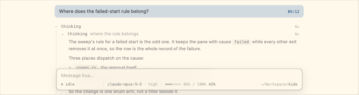
Headings, code, quotes and lists inside an expanded thinking block, all muted, in the 260pt scroller.
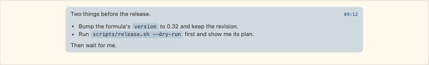
One line, paragraphs, quoted selections, code, attachments and long text on the 18% accent tint, with the accent timestamp.
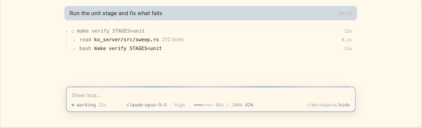
Five ways to show that pi works; the chosen one became the breathing dot in the composer foot of composer.html.
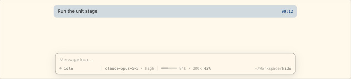
Status, model and thinking pickers, context and cwd in the composer; fixed-width status, the queue above the field.
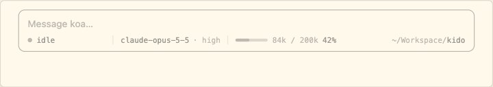
Breakpoints at 540, 340 and 200pt: state and context, then state alone; long cwd, ! mode, completing, compacting.
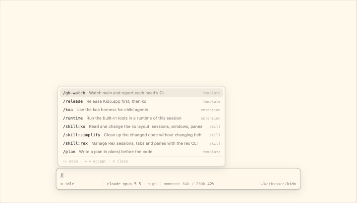
/ commands, prompts and skills; @ files and directories; @name agents; selected and empty states above the composer.
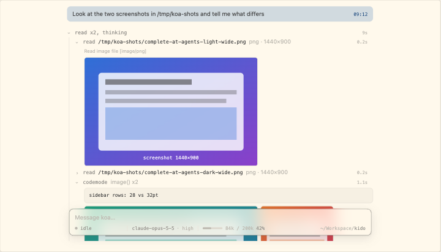
Transcript thumbnails and missing images, composer chips and drops, ⇧⌘-hover on file labels, the lightbox.
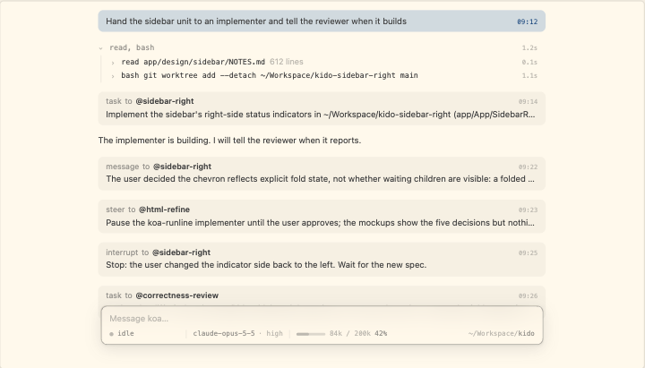
Cards for messages to and from agents, folded to one line; minimal job lines; spawn, steer and failure.
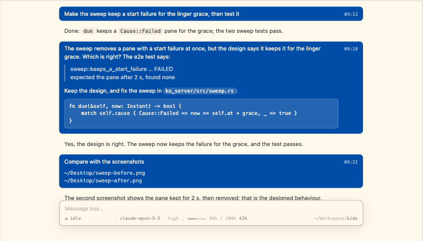
The composer's text edge on the transcript's; six user-message treatments; a message between agents as one line that opens on a click; every @name a link to its pane.
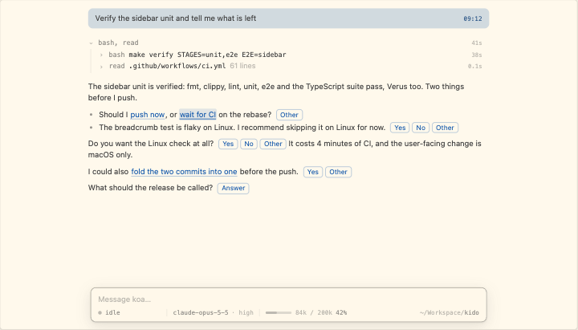
Annotated questions in a reply: option chips, Yes/No/Other and Answer, hover and answered states, the quote in the composer.
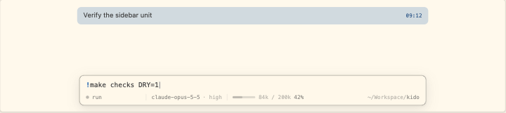
! and !! modes in the composer, the command's transcript row, cancel, while pi works, and Tab completion from bash.
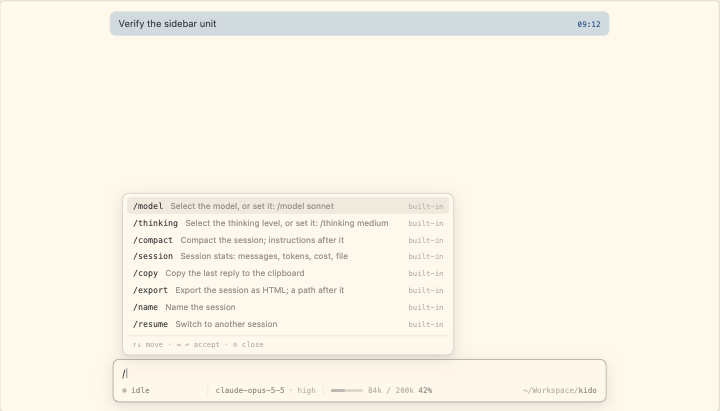
/model, /thinking, /compact, /session, /copy, /export and /quit in the popup and their outcomes; refused built-ins.
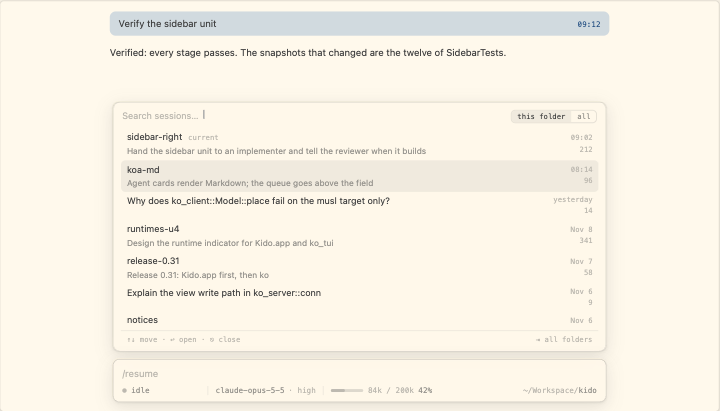
/resume and /new: the picker with search and metadata, empty and loading states, confirmation while a turn runs.